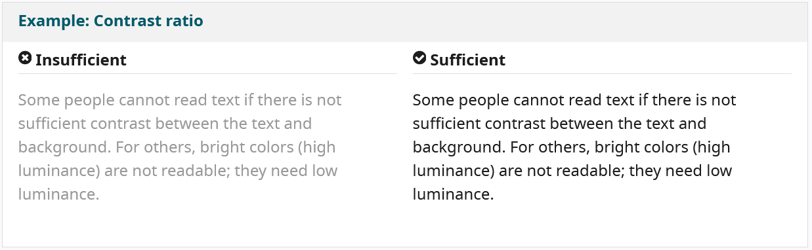
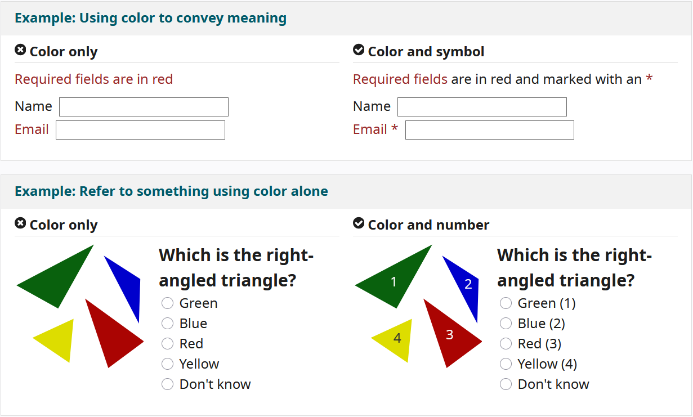

Foreground text needs to have sufficient contrast with background colors. This includes text on images, background gradients, buttons, and other elements. This does not apply for logos, or incidental text, such as text that happens to be in a photograph. The links below provide more information on the minimum contrast ratio as required by the WCAG and how to check contrast. “Contrast ratio” is a short version of the more technically correct term “luminance contrast ratio”.
While color can be useful to convey information, color should not be the only way information is conveyed. When using color to differentiate elements, also provide additional identification that does not rely on color perception. For example, use an asterisk in addition to color to indicate required form fields, and use labels to distinguish areas on graphs.
Provide distinct styles for interactive elements, such as links and buttons, to make them easy to identify. For example, change the appearance of links on mouse hover, keyboard focus, and touch-screen activation. Ensure that styles and naming for interactive elements are used consistently throughout the website.

Ensure that navigation across pages within a website has consistent naming, styling, and positioning. Provide more than one method of website navigation, such as a site search or a site map. Help users understand where they are in a website or page by providing orientation cues, such as breadcrumbs and clear headings.
Ensure that all fields have a descriptive label adjacent to the field. For left-to-right languages, labels are usually positioned to the left or above the field, except for checkboxes and radio buttons where they are usually to the right. Avoid having too much space between labels and fields.

Provide feedback for interactions, such as confirming form submission, alerting the user when something goes wrong, or notifying the user of changes on the page. Instructions should be easy to identify. Important feedback that requires user action should be presented in a prominent style.

Use whitespace and proximity to make relationships between content more apparent. Style headings to group content, reduce clutter, and make it easier to scan and understand.

Consider how page information is presented in different sized viewports, such as mobile phones or zoomed browser windows. Position and presentation of main elements, such as header and navigation can be changed to make best use of the space. Ensure that text size and line width are set to maximize readability and legibility.

Provide a place in your design for alternatives for images and media. For example, you might need:
• Visible links to transcripts of audio
• Visible links to audio described versions of videos
• Text along with icons and graphical buttons
• Captions and descriptions for tables or complex graphs
Work with content authors and developers to provide alternatives for non-text content.

Provide visible controls to allow users to stop any animations or auto-playing sound. This applies to carousels, image sliders, background sound, and videos.